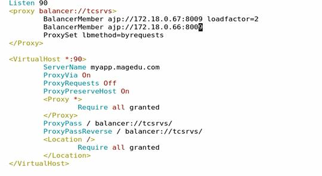

进入tomcat的请求可分为两类：
(1) standalone : 请求来自于客户端浏览器；
(2) 由其它的web server反代：来自前端的反代服务器；
nginx --> http connector --> tomcat
httpd(proxy_http_module) --> http connector --> tomcat
httpd(proxy_ajp_module) --> ajp connector --> tomcat
httpd(mod_jk) --> ajp connector --> tomcat
Tomcat集群
(1) httpd + tomcat cluster
httpd: mod_proxy, mod_proxy_http, mod_proxy_balancer
tomcat cluster：http connector
(2) httpd + tomcat cluster
httpd: mod_proxy, mod_proxy_ajp, mod_proxy_balancer
tomcat cluster：ajp connector
(3) httpd + tomcat cluster
httpd: mod_jk
tomcat cluster：ajp connector
(4) nginx + tomcat cluster
基于nginx反向代理后端tomcat负载均衡
编辑nginx.conf
http {
include mime.types;
default_type application/octet-stream;
sendfile on;
keepalive_timeout 65;
upstream web {
server 192.168.0.10:8080;
server 192.168.0.20:8080;
}
server {
listen 80;
server_name localhost;
location / {
root html;
index index.jsp index.htm;
}
location ~* \.(jsp|do)$ {
proxy_pass http://web;
}
error_page 500 502 503 504 /50x.html;
location = /50x.html {
root html;
}
}
}
基于http的httpd + tomcat cluster实现
httpd的代理模块：
proxy_module
proxy_http_module：适配http协议客户端；
proxy_ajp_module：适配ajp协议客户端；
httpd反向代理，配置在server或虚拟主机内
ProxyRequests off
<LocationMatch "\.(jsp|do)$">
ProxyPass http://127.0.0.1:8080/
</LocationMatch>
反向代理及后端负载均衡配置示例：
安装httpd并在/etc/httpd/conf.d/目录下新建tomcat-httpd.conf
<proxy balancer://tcsrvs>
BalancerMember http://172.18.100.67:8080
BalancerMember http://172.18.100.68:8080
ProxySet lbmethod=byrequests
</Proxy>
<VirtualHost *:80>
ServerName www.a.com
ProxyRequests Off
ProxyVia On
ProxyPreserveHost On
<Proxy *>
Require all granted
</Proxy>
ProxyPass / http://tcsrvs:8080/
ProxyPassReverse / http://tcsrvs:8080/
<Location />
Require all granted
</Location>
</VirtualHost>
配置参数详解：
ProxySet lbmethod
byrequests 进行加权请求计数
bytraffic
执行基于权重的流量计数调度，bybusyness通过考量每个后端服务器的当前负载进行调度
maxattempts
放弃请求之前实现故障转移的次数，默认为1，其最大值不应该大于总的节点数
nofailover
取值为On或Off，设置为On时表示后端服务器故障时，用户的session将损坏
在后端服务器不支持session复制时可将其设置为On。
stickysession
调度器的stickysession的名字，根据web程序语言的不同，其值为JSESSIONID或PHPSESSIONID
ProxyRequests 不开启正向代理
ProxyVia {On|Off|Full|Block}
用于控制在http首部是否使用Via:主要用于在多级代理中控制代理请求的流向。
默认为Off，即不启用此功能；
On表示每个请求和响应报文均添加Via:；
Full表示每个Via:行都会添加当前apache服务器的版本号信息；
Block表示每个代理请求报文中的Via：都会被移除。
ProxyPreserveHos {On|Off}
代理会将用户请求报文中的Host:行发送给后端的服务器，而不再使用ProxyPass指定的服务器地址。如果想在反向代理中支持虚拟主机，则需要开启此项
proxy_ajp反向代理
安装httpd并在/etc/httpd/conf.d/目录下新建tomcat-ajp.conf

apache:mod_jk反向代理
配置过程：
Tomcat端配置使用之前的配置，无需修改
Httpd端配置
1).vim /etc/httpd/conf.d/mod_jk.conf
LoadModule jk_module modules/mod_jk.so
JkWorkersFile /etc/httpd/conf.d/workers.properies
JkLogFile logs/mod_jk.log
JkLogLevel notice
JkMount /* testsrvs
JkMount /jk_status Status
2)./etc/httpd/conf.d/workers.properies
worker.list=testsrvs,Status,srv_A,srv_B
worker.srv_A.host=192.168.1.102
worker.srv_A.port=8009
worker.srv_A.lbfactor=1
worker.srv_A.type=ajp13
worker.srv_B.host=192.168.1.103
worker.srv_B.port=8009
worker.srv_B.lbfactor=2
worker.srv_B.type=ajp13
worker.testsrvs.type=lb
worker.testsrvs.balance_workers=srv_A,srv_B
worker.testsrvs.sticky_session=0 //{0|1}关闭/开启session sticky
worker.Status.type=status
mod_proxy和mod_jk
mod_proxy
优势:
不需要编译和维护一个对立的模块。mod_proxy,mod_proxy_http,mod_proxy_ajp,mod_proxy_balancer已经是apache 2.2+的标准集成部分；
可以使用http、https和AJP协议，即便是在同一个balancer中。
劣势:
mod_proxy_ajp不支持大于8k的数据包；
只有最基本的负载均衡器；
不支持域模型集群（domain model clustering）
mod_jk是ASF的一个项目，是一个工作于apache端基于AJP协议与Tomcat通信的连接器，它是apache的一个模块，是AJP协议的客户端（服务端是Tomcat的AJP连接器
优势:
先进的负载均衡器；
先进的节点失败侦察功能；
支持大型AJP 数据包
劣势:
需要单独维护一个独立的模块